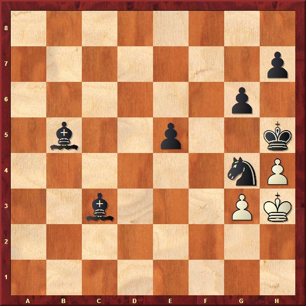

Club de Ajedrez Agustín de Leiza |
| » inicio » socios del club » cto. por equipos » últimos torneos » enlaces |
Pinchetas en Villabona26-07-09Los Santiagos han llegado y de nuevo nos han invitado a jugar en las fiestas patronales en el vecino pueblo de Villabona. Como este año no querían que Iosu se llevase de nuevo el trofeo y han organizado un campeonato por equipos en vez de individual. Y no contentos con ello han invitado a Gros, que a sabiendas de las delicias culinarias en Villabona han traido a Santi Gonzalez, esperemos que el próximo maestro internacional vasco. Por nuestra parte, hoy bajo la denominación de Andoain tal y como se anunciaba en el cartel del torneo en Villabona, han jugado Iosu, Claudio, Javi y Aritz. El torneo como se esperaba ha sido dominado por Gros, que no contentos de traer a Santi, han traido a Luis Olaizola y Andoni Segovia jugaba de tercero. Sólo se han dejado por el camino 4.5 puntos en el torneo. Por nuestra parte hemos quedado segundos, a 3.5 puntos de Gros, y un punto por delante de los brillantes vencedores del día anterior, Zarauz. Buenas actuaciones de Claudio y Javi, que solo se dejaron 1 y 1.5 puntos en todo el torneo respectivamente. La anécdota del día la protagonizó Javi, no fue la única ya que fuimos testigos de unas cuantas triquiñuelas. 
Eran los últimos segundos,
y en este momento Javi realizó la mejor jugada de la partida,
¡reclamó ahogado! el contrario estupefacto en seguida
dió la mano, que se convirtió en una carcajada general
cuando los demás presentes en seguida señalamos que g2
estaba libre para el monarca blanco.
La comida como siempre excelente y dejó a todo el mundo a gusto. |